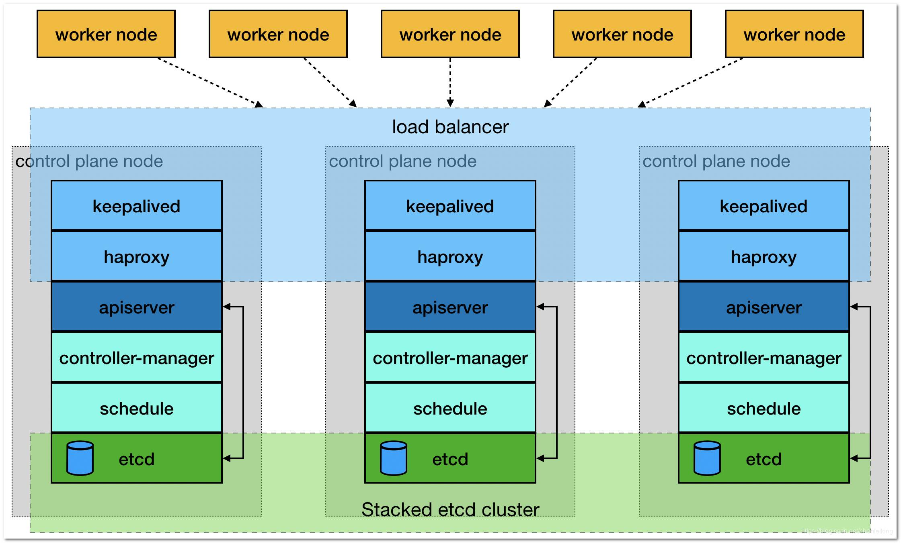

使用 kubeadm 安装 kubernetes¶
这里描述如何使用 kubeadm 工具来安装 kubernetes v1.23, 官方也有类似文档 ，但觉得不够详细
主机列表¶
本次安装有如下服务器，信息如下：
| 主机名称 | IP 地址 | 操作系统 |
|---|---|---|
| node27.k8s.wgzhao.com | 192.168.23.27 | CentOS 7.9 |
| node28.k8s.wgzhao.com | 192.168.23.28 | CentOS 7.9 |
| node29.k8s.wgzhao.com | 192.168.23.29 | CentOS 7.9 |
| node30.k8s.wgzhao.com | 192.168.23.30 | CentOS 7.9 |
| node31.k8s.wgzhao.com | 192.168.23.31 | CentOS 7.9 |
操作系统及磁盘说明¶
- 系统为最小安装模式进行安装，然后额外必要的软件包
- 禁用了
swap， 这是 docker 要求的 - 配置好 epel, docker-ce, kubernetes 仓库，这部分可以自行 Google
- 开启
node27到所有节点（包括自身) 的 ssh 密钥登录，使用root。
keepalived + haproxy 安装¶
为了保证核心组件的高可用以及提供负载均衡能力，在node27 - node29 三个节点上部署了 keepalived + haproxy 作为高可用方案。
其中浮动IP地址(VIP) 为 192.168.23.32, 配置说明如下：
keepalived¶
node27 节点作为 keepalived 的 master，配置文件在 /etc/keepalived/keepalived.conf ，内容如下：
! /etc/keepalived/keepalived.conf
! Configuration File for keepalived
global_defs {
router_id k8s
}
vrrp_script check_haproxy {
script "killall -0 haproxy"
interval 3
weight -2
fall 10
rise 2
}
vrrp_instance VI_1 {
state MASTER
interface bond0
virtual_router_id 51
priority 250
authentication {
auth_type PASS
auth_pass ZAXRUlay
}
virtual_ipaddress {
192.168.23.32
}
track_script {
check_haproxy
}
}
node28, node29 两个节点作为 keepalived 的 BACKUP， 其配置文件内如下：
! /etc/keepalived/keepalived.conf
! Configuration File for keepalived
global_defs {
router_id k8s
}
vrrp_script check_haproxy {
script "killall -0 haproxy"
interval 3
weight -2
fall 10
rise 2
}
vrrp_instance VI_1 {
state BACKUP
interface bond0
virtual_router_id 51
priority 200
authentication {
auth_type PASS
auth_pass ZAXRUlay
}
virtual_ipaddress {
192.168.23.32
}
track_script {
check_haproxy
}
}
注： 两个节点的配置仅有 priority 200 处不同，node29 的配置为 priority 150.
haproxy¶
haproxy 在三个节点上的配置都相同，配置文件位于 /etc/haproxy/haproxy.cfg
global
log 127.0.0.1 local2
chroot /var/lib/haproxy
pidfile /var/run/haproxy.pid
maxconn 4000
user haproxy
group haproxy
daemon
defaults
log global
mode http
option dontlognull
timeout connect 5000ms
timeout client 600000ms
timeout server 600000ms
listen stats
bind :19090
mode http
balance
stats uri /haproxy_stats
stats auth admin:admin@123!
stats admin if TRUE
frontend kube-apiserver
mode tcp
option tcplog
bind *:8443
default_backend kube-apiserver-backend
backend kube-apiserver-backend
mode tcp
balance roundrobin
server node27.k8s.wgzhao.com node27:6443 check
server node28.k8s.wgzhao.com node28:6443 check
server node29.k8s.wgzhao.com node29:6443 check
kubernetes 安装¶
部署环境说明¶
我们使用 kubeadm 搭建一个高可用的k8s集群，高可用主要体现在对 master节点组件及 etcd 存储的高可用，本次部署使用到的服务器 IP 及角色对应如下：
| 主机名称 | IP 地址 | 角色 |
|---|---|---|
| node.k8s.wgzhao.com | 192.168.23.32 | VIP |
| node27.k8s.wgzhao.com | 192.168.23.27 | master/node |
| node28.k8s.wgzhao.com | 192.168.23.28 | master/node |
| node29.k8s.wgzhao.com | 192.168.23.29 | master/node |
| node30.k8s.wgzhao.com | 192.168.23.30 | node |
| node31.k8s.wgzhao.com | 192.168.23.31 | node |
集群架构及部署准备¶
搭建三个 master 通过 keepalived 提供一个 vip 实现高可用，并且添加 haproxy来为 apiserver 提供反向代理的作用。
这样来自 haproxy 的所有请求都将轮询转发到后端的 master 节点上。应架构图如下所示：

在安装之前要提前做好以下事情：
- 修改hosts文件，保证每个节点都能 ping 通设定的主机名
- 所有主机的时间必须同步，配置并开启
ntpd服务 - 关闭防火墙
- 关闭 selinux
- 禁用 swap，并在
/etc/fstab中注释相应的配置 - 配置必要的系统参数
- 开启路由
cat /etc/sysctl.d/k8s.conf net.ipv4.ip_forward = 1 net.bridge.bridge-nf-call-ip6tables = 1 net.bridge.bridge-nf-call-iptables = 1 net.ipv4.ip_forward = 1 net.bridge.bridge-nf-call-ip6tables = 1 net.bridge.bridge-nf-call-iptables = 1- 配置资源文件
$ echo "* soft nofile 65536" >> /etc/security/limits.conf $ echo "* hard nofile 65536" >> /etc/security/limits.conf $ echo "* soft nproc 65536" >> /etc/security/limits.conf $ echo "* hard nproc 65536" >> /etc/security/limits.conf $ echo "* soft memlock unlimited" >> /etc/security/limits.conf $ echo "* hard memlock unlimited" >> /etc/security/limits.conf
- 配置资源文件
安装和配置 Docker¶
以下操作在所有节点上执行
yum install -y docker-ce
cat -> /etc/docker/daemon.json <<EOF
{
"exec-opts": ["native.cgroupdriver=systemd"],
"log-driver": "json-file",
"log-opts": {
"max-size": "100m"
},
"storage-driver": "overlay2",
"storage-opts": [
"overlay2.override_kernel_check=true"
]
}
EOF
# systemctl daemon-realod
# systemctl enable --now docker
# systemctl start docker
检查 docker 信息
# docker info
Client:
Context: default
Debug Mode: false
Plugins:
app: Docker App (Docker Inc., v0.9.1-beta3)
buildx: Docker Buildx (Docker Inc., v0.7.1-docker)
scan: Docker Scan (Docker Inc., v0.12.0)
Server:
Containers: 14
Running: 12
Paused: 0
Stopped: 2
Images: 23
Server Version: 20.10.12
Storage Driver: overlay2
Backing Filesystem: xfs
Supports d_type: true
Native Overlay Diff: true
userxattr: false
Logging Driver: json-file
Cgroup Driver: systemd
Cgroup Version: 1
Plugins:
Volume: local
Network: bridge host ipvlan macvlan null overlay
Log: awslogs fluentd gcplogs gelf journald json-file local logentries splunk syslog
docker info
Client:
Context: default
Debug Mode: false
Plugins:
app: Docker App (Docker Inc., v0.9.1-beta3)
buildx: Docker Buildx (Docker Inc., v0.7.1-docker)
scan: Docker Scan (Docker Inc., v0.12.0)
准备 kubernetes 所需的镜像¶
因为服务器无法直接联网，这部分需要先自行从网络上下载所需要的镜像，然后打包上传到每台服务器上，并加载镜像，需要的镜像大致如下：
上述只有一行话，但应该是整个部署里耗时最长的操作
# docker images |grep 'k8s.gcr.io'
k8s.gcr.io/kube-apiserver v1.23.1 b6d7abedde39 3 weeks ago 135MB
k8s.gcr.io/kube-proxy v1.23.1 b46c42588d51 3 weeks ago 112MB
k8s.gcr.io/kube-controller-manager v1.23.1 f51846a4fd28 3 weeks ago 125MB
k8s.gcr.io/kube-scheduler v1.23.1 71d575efe628 3 weeks ago 53.5MB
k8s.gcr.io/controller v1.1.0 ae1a7201ec95 7 weeks ago 285MB
k8s.gcr.io/metrics-server v0.5.2 f73640fb5061 8 weeks ago 64.3MB
k8s.gcr.io/flannel v0.15.1 e6ea68648f0c 2 months ago 69.5MB
k8s.gcr.io/etcd 3.5.1-0 25f8c7f3da61 2 months ago 293MB
k8s.gcr.io/kube-webhook-certgen v1.1.1 c41e9fcadf5a 3 months ago 47.7MB
k8s.gcr.io/coredns/coredns v1.8.6 a4ca41631cc7 3 months ago 46.8MB
k8s.gcr.io/coredns v1.8.6 a4ca41631cc7 3 months ago 46.8MB
k8s.gcr.io/pause 3.6 6270bb605e12 4 months ago 683kB
k8s.gcr.io/defaultbackend-amd64 1.5 b5af743e5984 3 years ago 5.13MB
安装 kubadm, kubelet, kubectl¶
# yum install -y kubeadm kubelet kubectl
# echo "source <(kubectl completion bash)" >> ~/.bashrc
安装 master¶
在具有 VIP 地址的服务器上进行操作，默认情况下，应该是在 node27 节点上
创建kubeadm配置文件¶
# mkdir -p /etc/kubernetes/manifests`
/etc/kubernetes/manifests/kubeadm-config.yaml 配置文件，内容如下：
apiServer:
certSANs:
- node27.k8s.wgzhao.com
- node28.k8s.wgzhao.com
- node29.k8s.wgzhao.com
- node.k8s.wgzhao.com
- 192.168.23.27
- 192.168.23.28
- 192.168.23.29
- 192.168.23.32
- 127.0.0.1
extraArgs:
authorization-mode: Node,RBAC
timeoutForControlPlane: 4m0s
apiVersion: kubeadm.k8s.io/v1beta3
certificatesDir: /etc/kubernetes/pki
clusterName: kubernetes
controlPlaneEndpoint: "node.k8s.wgzhao.com:8443"
controllerManager: {}
dns:
type: CoreDNS
etcd:
local:
dataDir: /var/lib/etcd
kind: ClusterConfiguration
kubernetesVersion: v1.23.1
networking:
dnsDomain: cluster.local
podSubnet: 10.244.0.0/16
serviceSubnet: 10.1.0.0/16
scheduler: {}
初始化 master 节点¶
# kubeadm init --config /etc/kubernetes/manifests/kubeadm-config.yaml --upload-certs
上述操作如果成功的话，则应该看类似下面的输出
Your Kubernetes control-plane has initialized successfully!
To start using your cluster, you need to run the following as a regular user:
mkdir -p $HOME/.kube
sudo cp -i /etc/kubernetes/admin.conf $HOME/.kube/config
sudo chown $(id -u):$(id -g) $HOME/.kube/config
Alternatively, if you are the root user, you can run:
export KUBECONFIG=/etc/kubernetes/admin.conf
You should now deploy a pod network to the cluster.
Run "kubectl apply -f [podnetwork].yaml" with one of the options listed at:
https://kubernetes.io/docs/concepts/cluster-administration/addons/
You can now join any number of the control-plane node running the following command on each as root:
kubeadm join node.k8s.wgzhao.com:8443 --token ko0dqo.ia527mk472eibub9 \
--discovery-token-ca-cert-hash sha256:050903b27c13a642064ea6298458be9d203bcf5def4c5d5af55597a506fd4949 \
--control-plane --certificate-key 34c6b1b15c57c2acff76a99752ba65a11c7cb1593f67fa4f0383b126b5509658
Please note that the certificate-key gives access to cluster sensitive data, keep it secret!
As a safeguard, uploaded-certs will be deleted in two hours; If necessary, you can use
"kubeadm init phase upload-certs --upload-certs" to reload certs afterward.
Then you can join any number of worker nodes by running the following on each as root:
kubeadm join node.k8s.wgzhao.com:8443 --token ko0dqo.ia527mk472eibub9 \
--discovery-token-ca-cert-hash sha256:050903b27c13a642064ea6298458be9d203bcf5def4c5d5af55597a506fd4949
保存上述输出内容到文本文件，后续要用到。
按照上述提示，进行操作
# mkdir -p $HOME/.kube
# sudo cp -i /etc/kubernetes/admin.conf $HOME/.kube/config
# sudo chown $(id -u):$(id -g) $HOME/.kube/config
查看集群状态
# kubectl get cs
NAME STATUS MESSAGE ERROR
scheduler Healthy ok
controller-manager Healthy ok
etcd-0 Healthy {"health":"true","reason":""}
安装集群网络¶
这里为了简单起见，没有使用 calico 网络组件，而是使用了较老的flannel网络组件，后续可以转换。
以下操作继续在 master 节点上执行。
获取 flannel 的配置文件¶
# wget -c -O kube-flannel.yaml https://raw.githubusercontent.com/coreos/flannel/master/Documentation/kube-flannel.yml
这里注意节点：
- 无法访问外网的情况下，先将文件复制到本地，然后粘贴或者上传到服务器
- 查看该文件中涉及到哪些镜像，如果本地不存在，则需要先下载然后上传到所有服务器
- 后续操作均需要考虑以上步骤
安装¶
# kubectl apply -f kube-flannel.yml
podsecuritypolicy.policy/psp.flannel.unprivileged created
clusterrole.rbac.authorization.k8s.io/flannel created
clusterrolebinding.rbac.authorization.k8s.io/flannel created
serviceaccount/flannel created
configmap/kube-flannel-cfg created
daemonset.apps/kube-flannel-ds-amd64 created
daemonset.apps/kube-flannel-ds-arm64 created
daemonset.apps/kube-flannel-ds-arm created
daemonset.apps/kube-flannel-ds-ppc64le created
daemonset.apps/kube-flannel-ds-s390x created
检测安装是否成功¶
# kubectl get pods -n kube-system
NAME READY STATUS RESTARTS AGE
coredns-64897985d-6rnps 1/1 Running 0 27h
coredns-64897985d-slpf2 1/1 Running 0 27h
etcd-node27.k8s.wgzhao.com 1/1 Running 6 29h
etcd-node28.k8s.wgzhao.com 1/1 Running 0 27h
etcd-node29.k8s.wgzhao.com 1/1 Running 0 27h
kube-apiserver-node27.k8s.wgzhao.com 1/1 Running 0 29h
kube-apiserver-node28.k8s.wgzhao.com 1/1 Running 0 27h
kube-apiserver-node29.k8s.wgzhao.com 1/1 Running 0 27h
kube-controller-manager-node27.k8s.wgzhao.com 1/1 Running 1 (27h ago) 29h
kube-controller-manager-node28.k8s.wgzhao.com 1/1 Running 0 27h
kube-controller-manager-node29.k8s.wgzhao.com 1/1 Running 0 27h
kube-flannel-ds-49j7s 1/1 Running 0 27h
kube-flannel-ds-7vzqd 1/1 Running 0 27h
kube-flannel-ds-bzkhs 1/1 Running 0 27h
kube-flannel-ds-kc67m 1/1 Running 0 27h
kube-flannel-ds-qn2v6 1/1 Running 0 27h
kube-proxy-6whsp 1/1 Running 0 29h
kube-proxy-cndmh 1/1 Running 0 27h
kube-proxy-dgv4c 1/1 Running 0 27h
kube-proxy-h55bd 1/1 Running 0 27h
kube-proxy-jwc9l 1/1 Running 0 27h
kube-scheduler-node27.k8s.wgzhao.com 1/1 Running 5 (27h ago) 29h
kube-scheduler-node28.k8s.wgzhao.com 1/1 Running 0 27h
kube-scheduler-node29.k8s.wgzhao.com 1/1 Running 0 27h
其他节点加入集群¶
首先将 master 节点上的密钥及相关文件拷贝到 node28, node29 两个节点上
[root@node27]# ssh root@node28 mkdir -p /etc/kubernetes/pki/etcd
[root@node27]# ssh root@node29 mkdir -p /etc/kubernetes/pki/etcd
[root@node27]# cd /etc/kubernetes
[root@node27]# scp admin.conf root@node28:/etc/kubernetes/admin.conf
[root@node27]# scp admin.conf root@node29:/etc/kubernetes/admin.conf
[root@node27]# scp pki/{ca.*,sa.*,front-proxy-ca.*} root@node28:/etc/kubernetes/pki
[root@node27]# scp pki/{ca.*,sa.*,front-proxy-ca.*} root@node29:/etc/kubernetes/pki
[root@node27]# scp pki/etcd/ca.* root@node28:/etc/kubernetes/pki/etcd
[root@node27]# scp pki/etcd/ca.* root@node29:/etc/kubernetes/pki/etcd
分别在 node28, node29 上执行下面的命令
[root@node28]# kubeadm join node.k8s.wgzhao.com:8443 --token ko0dqo.ia527mk472eibub9 \
--discovery-token-ca-cert-hash sha256:050903b27c13a642064ea6298458be9d203bcf5def4c5d5af55597a506fd4949 \
--control-plane --certificate-key 34c6b1b15c57c2acff76a99752ba65a11c7cb1593f67fa4f0383b126b5509658
[root@node29]# kubeadm join node.k8s.wgzhao.com:8443 --token ko0dqo.ia527mk472eibub9 \
--discovery-token-ca-cert-hash sha256:050903b27c13a642064ea6298458be9d203bcf5def4c5d5af55597a506fd4949 \
--control-plane --certificate-key 34c6b1b15c57c2acff76a99752ba65a11c7cb1593f67fa4f0383b126b5509658
同样根据命令的输出提示进行后续操作，主要是下面的操作
[root@node28]# mkdir -p $HOME/.kube
[root@node28]# cp -i /etc/kubernetes/admin.conf $HOME/.kube/config
[root@node28]# chown $(id -u):$(id -g) $HOME/.kube/config
检查结果¶
[root@node27]# kubectl get node
NAME STATUS ROLES AGE VERSION
node27.k8s.wgzhao.com Ready control-plane,master 29h v1.23.1
node28.k8s.wgzhao.com Ready control-plane,master 27h v1.23.1
node29.k8s.wgzhao.com Ready control-plane,master 27h v1.23.1
node 加入集群¶
在剩下的 node30, node31 节点上执行下面的命令：
[root@node30]# kubeadm join node.k8s.wgzhao.com:8443 --token ko0dqo.ia527mk472eibub9 \
--discovery-token-ca-cert-hash sha256:050903b27c13a642064ea6298458be9d203bcf5def4c5d5af55597a506fd4949
检查结果¶
[root@node27]# kubectl get node
NAME STATUS ROLES AGE VERSION
node27.k8s.wgzhao.com Ready control-plane,master 29h v1.23.1
node28.k8s.wgzhao.com Ready control-plane,master 27h v1.23.1
node29.k8s.wgzhao.com Ready control-plane,master 27h v1.23.1
node30.k8s.wgzhao.com Ready <none> 27h v1.23.1
node31.k8s.wgzhao.com Ready <none> 27h v1.23.1
master 节点也做为node 节点加入¶
默认情况下，master节点将来并不会分配 pod，这里我们希望所有的 master 也同时充当 node 角色。需要在任意 master 节点上执行下面的命令：
[root@node27]# kubectl taint nodes --all node-role.kubernetes.io/master-
node "node27" untainted
node "node28" untainted
node "node29" untainted
taint "node-role.kubernetes.io/master:" not found
taint "node-role.kubernetes.io/master:" not found
后续扩容¶
增加 worker 节点¶
默认情况下，上述命令输出的 token 有效期是 24 小时，如果之后要加入集群，需要重新生成 token，命令如下：
# 显示获取token列表
$ kubeadm token list
# 生成新的token
$ kubeadm token create
除token外，join命令还需要一个sha256的值，通过以下方法计算
openssl x509 -pubkey -in /etc/kubernetes/pki/ca.crt | openssl rsa -pubin -outform der 2>/dev/null | openssl dgst -sha256 -hex | sed 's/^.* //'
用上面输出的token和sha256的值或者是利用kubeadm token create --print-join-command拼接join命令即可
增加 master 节点¶
如果想要增加 master 节点，大致过程和增加 worker 节点差不多，但有些细微区别，过程如下：
创建 certificate key¶
要想作为 master 节点加入，首先得有 certificate key, 在集群中目前是 master 节点上执行下面的命令
kubeadm init phase upload-certs --upload-certs
会得到类似下面的输出
W0401 20:29:27.970092 4138 version.go:103] could not fetch a Kubernetes version from the internet: unable to get URL "https://dl.k8s.io/release/stable-1.txt": Get "https://dl.k8s.io/release/stable-1.txt": dial tcp: lookup dl.k8s.io on [::1]:53: read udp [::1]:49473->[::1]:53: read: connection refused
W0401 20:29:27.970196 4138 version.go:104] falling back to the local client version: v1.23.1
[upload-certs] Storing the certificates in Secret "kubeadm-certs" in the "kube-system" Namespace
[upload-certs] Using certificate key:
a551f2def4e697f7a11672bae42cc3cd9f0bf7a274455fe7dd0493c9f95a5da1
上述输出的最后一行 hash a551f2def4e697f7a11672bae42cc3cd9f0bf7a274455fe7dd0493c9f95a5da1 值就是 certificate key
接着创建用于 join 的指令
kubeadm token create --certificate-key a551f2def4e697f7a11672bae42cc3cd9f0bf7a274455fe7dd0493c9f95a5da1 \
--print-join-command
上述命令会获得下面的输出
kubeadm join 192.168.23.32:6443 --token guh5md.wgnvivkar5e07oty \
--discovery-token-ca-cert-hash sha256:1b9e1ba8899715e67410236b6e478438da4403163afb3bd2439498622df4ceb6 \
--control-plane --certificate-key a551f2def4e697f7a11672bae42cc3cd9f0bf7a274455fe7dd0493c9f95a5da1
然后在需要作为 master 节点的机器上执行下面的命令
kubeadm join 192.168.23.32:6443 --token guh5md.wgnvivkar5e07oty \
--discovery-token-ca-cert-hash sha256:1b9e1ba8899715e67410236b6e478438da4403163afb3bd2439498622df4ceb6 \
--control-plane --certificate-key a551f2def4e697f7a11672bae42cc3cd9f0bf7a274455fe7dd0493c9f95a5da1 \
--apiserver-advertise-address 192.168.23.100
注意上述命令增加了 --apiserver-advertise-address 192.168.23.100，这等于告诉其他节点，增加了一个 api-server
上述命令会得到如下的输出：
[preflight] Running pre-flight checks
[preflight] Reading configuration from the cluster...
[preflight] FYI: You can look at this config file with 'kubectl -n kube-system get cm kubeadm-config -o yaml'
[preflight] Running pre-flight checks before initializing the new control plane instance
[preflight] Pulling images required for setting up a Kubernetes cluster
[preflight] This might take a minute or two, depending on the speed of your internet connection
[preflight] You can also perform this action in beforehand using 'kubeadm config images pull'
[download-certs] Downloading the certificates in Secret "kubeadm-certs" in the "kube-system" Namespace
[certs] Using certificateDir folder "/etc/kubernetes/pki"
[certs] Generating "apiserver" certificate and key
....
[kubeconfig] Generating kubeconfig files
[kubeconfig] Using kubeconfig folder "/etc/kubernetes"
[kubeconfig] Using existing kubeconfig file: "/etc/kubernetes/admin.conf"
...
[kubeconfig] Using existing kubeconfig file: "/etc/kubernetes/scheduler.conf"
[control-plane] Using manifest folder "/etc/kubernetes/manifests"
[control-plane] Creating static Pod manifest for "kube-apiserver"
[control-plane] Creating static Pod manifest for "kube-controller-manager"
[control-plane] Creating static Pod manifest for "kube-scheduler"
[check-etcd] Checking that the etcd cluster is healthy
[kubelet-start] Writing kubelet configuration to file "/var/lib/kubelet/config.yaml"
[kubelet-start] Writing kubelet environment file with flags to file "/var/lib/kubelet/kubeadm-flags.env"
[kubelet-start] Starting the kubelet
[kubelet-start] Waiting for the kubelet to perform the TLS Bootstrap...
[etcd] Announced new etcd member joining to the existing etcd cluster
[etcd] Creating static Pod manifest for "etcd"
[etcd] Waiting for the new etcd member to join the cluster. This can take up to 40s
The 'update-status' phase is deprecated and will be removed in a future release. Currently it performs no operation
[mark-control-plane] Marking the node node100 as control-plane by adding the labels: [node-role.kubernetes.io/master(deprecated) node-role.kubernetes.io/control-plane node.kubernetes.io/exclude-from-external-load-balancers]
[mark-control-plane] Marking the node node100 as control-plane by adding the taints [node-role.kubernetes.io/master:NoSchedule]
等待一分钟，然后在该节点上执行 kubectl get nodes 应该就可以看到节点的信息，并显示为 control-plane, master 角色了。